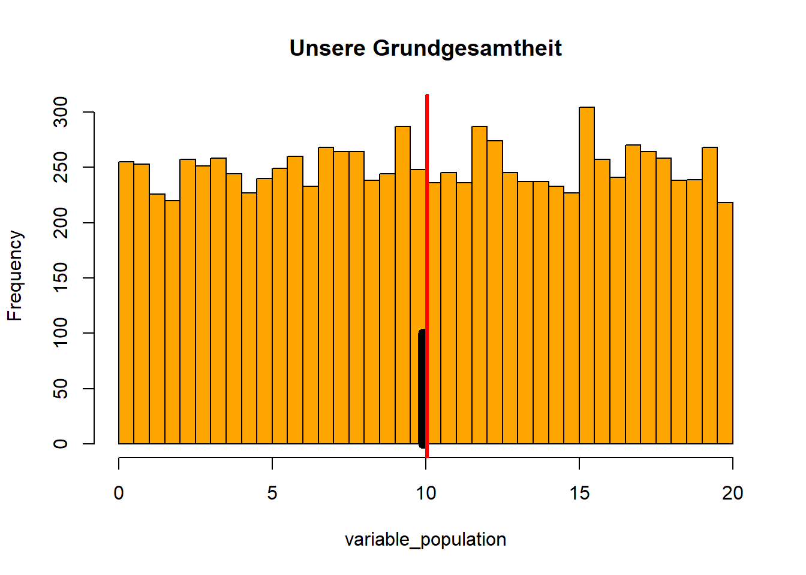
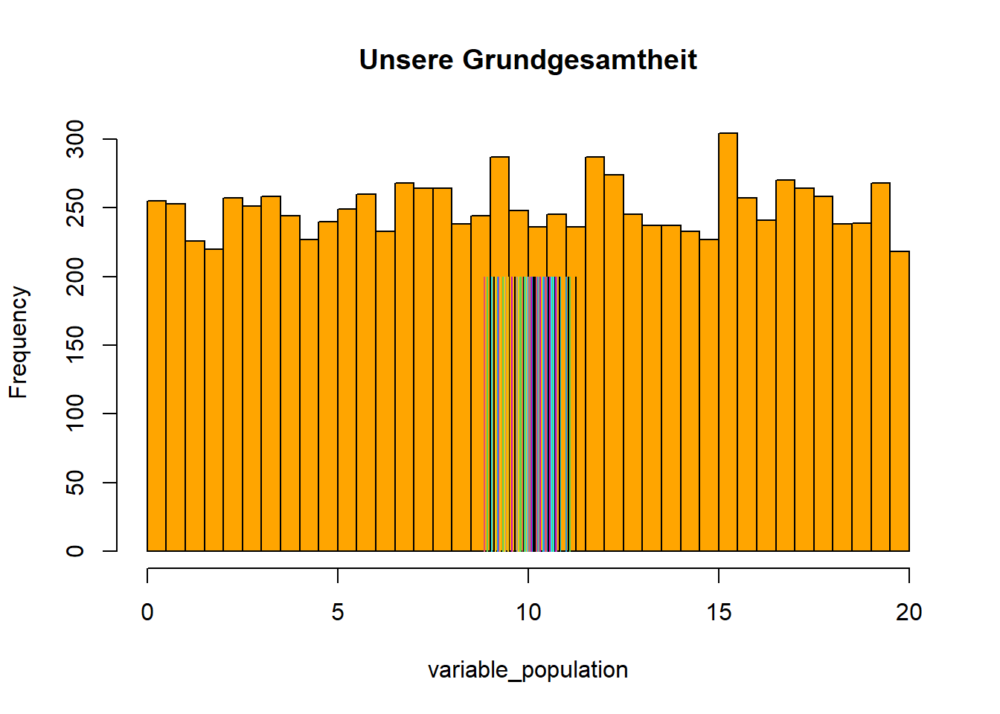
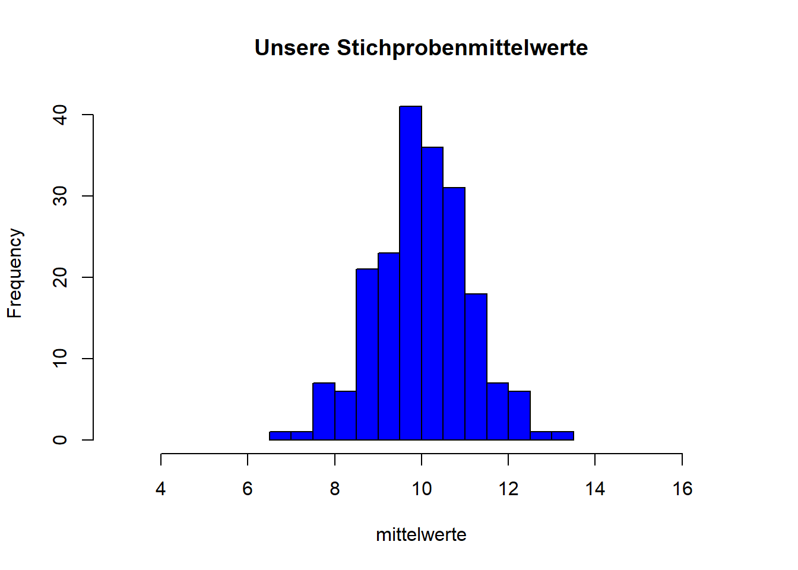
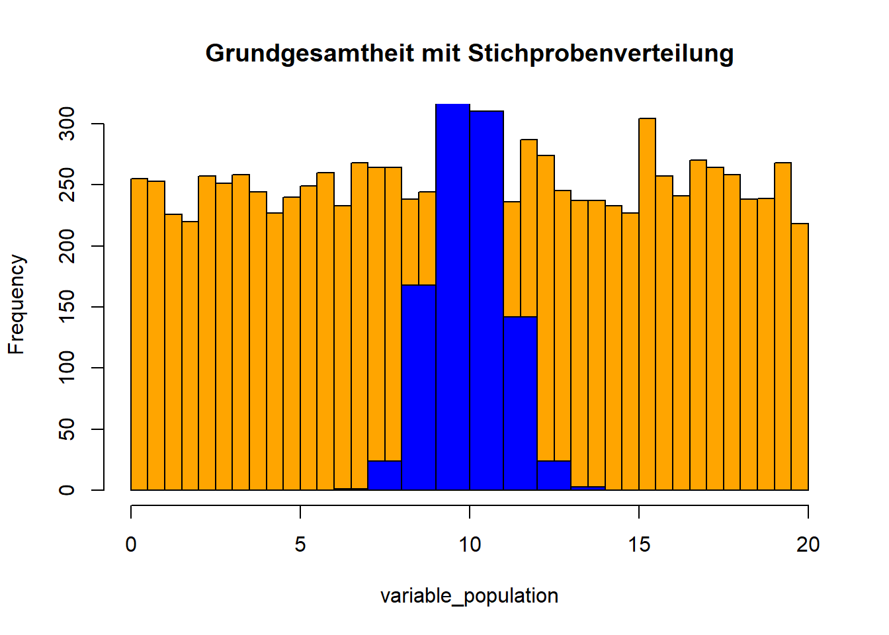
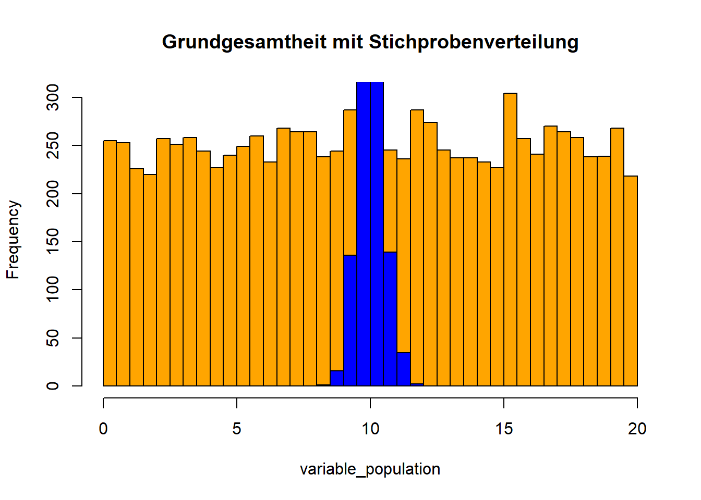

6 Wochenplan 06: Code Rezipieren
…im Rahmen der 06. und 07.Einheit.
6.1 Lernziele
Über die vergangenen Wochen haben wir zahlreiche grundlegende Aspekte der Arbeit mit R kennengelernt. Als Vorbereitung im Rahmen des Wochenplans 06 sollen Sie diese Inhalte noch einmal Revue passieren lassen. Im Rahmen dieser Repetition werden weiter zwei neue Dinge vermittelt werden: Auf der einen Seite erfolgt die Schulung aktiver Rezeptionsfertigkeiten (sprich: R-Code lesen und verstehen lernen). Auch dies ist eine wichtige Arbeitstechnik in R. Auf der anderen Seite sollen Sie mit dem rezipierten Code das Prinzip der Inferenzstatistik (und der Stichprobenverteilung sowie des Standardfehlers) in R veranschaulicht bekommen.
Konkret lassen sich folgende Seminarziele festhalten:
Sie können von einer anderen Person geschriebenen R-Code entziffern und mit Kommentaren versehen.
Sie entwickeln dabei ein Gefühl für unterschiedliche Arten, Code lesbar zu gestalten.
Sie wissen, wie selbstgeschriebene Funktionen in R aussehen und können diese Schritt für Schritt interpretieren.
Sie entwickeln Ihr Verständnis davon weiter, wie in R Grafiken genutzt und angepasst werden, um statistische Inhalte zu visualisieren.
Sie nutzen R um über Konzepte der Inferenzstatistik (wie den Standardfehler) nachzudenken.
6.2 Besprechung Skript “standardfehler.R”
Der folgende Code ist ein Skript zur Simulation des Standardfehlers und soll helfen, das Prinzip der Inferenzstatistik, den Standardfehler sowie die damit zusammenhängenden Ebenen von Grundgesamtheit, einzelner Stichprobe und Stichprobenverteilung zu verstehen und zu veranschaulichen (vgl. Diaz-Bone 2019, 145f).
Ebene der Grundgesamtheit:
Unsere Grundgesamtheit bilden 1000 Ausprägungen einer beliebigen Variable, die hier nun gleichverteilt ist und sich zwischen 0 und 20 bewegt. Die Verteilung dieser Variable können wir dann in einem Histogramm darstellen.
variable_population <- runif(10000,
min = 0,
max = 20)
mean(variable_population)## [1] 10.0422sd(variable_population)## [1] 5.739485hist(variable_population,
breaks = 30,
col="orange",
main="Unsere Grundgesamtheit",
xlim = c(0,20)
)Ebene der einzelnen Stichprobe:
Als nächster Schritt wird nun eine Stichprobe gezogen mit der Funktion sample(), in der zufällig 100 Fälle der Grundgesamtheit landen. Von dieser Stichprobe können wir dann den Mittelwert berechnen und diesen Wert in das Histogramm der Grundgesamtheit einfügen. Der Mittelwert der Stichprobe (schwarz) unterscheidet sich natürlich minimal vom Mittelwert der Grundgesamt (rot).5 Letzterer wird dann über die Funktion abline() eingezeichnet.6
sample1 <- sample(variable_population, 100)
mean(variable_population)## [1] 10.0422mean(sample1)## [1] 9.909766hist(variable_population,
breaks = 30,
col="orange",
main="Unsere Grundgesamtheit",
xlim = c(0,20)
)
points(rep(mean(sample1), 2),
c(0, 100),
type = "l",
col = "black",
lwd = 8)
#Hier wird nun auch noch der Mittelwert der Grundgesamtheit eingefügt
#...aber mittels der Funktion 'abline()'
abline(v=mean(variable_population), col = "red", lwd = 3)
Da wir nun mit einer fiktiven Grundgesamtheit und in einem Modell arbeiten können wir immer wieder neue Stichproben ziehen. Dies könnten wir realisieren, indem wir den Codechunk von oben immer wieder repetieren. Oder als “elegantere” Variante: Wir schreiben uns den Code für eine for-Schleife, die uns eine beliebige Anzahl Stichproben zieht (i), den Mittelwert der Stichprobe berechnet und diesen Mittelwert in das Histogramm der Grundgesamtheit einzeichnet.
Ebene der einzelnen Stichprobe als Loop:
Der folgende Code ruft nun nochmals das Histogramm der Grundgesamtheit auf. Anschliessend zieht die Schleife 100 Stichproben, berechnet deren Mittelwerte und fügt diese als Linie mit verschiedenen Farben in die Grafik ein.
hist(variable_population,
breaks = 30,
col = "orange",
main="Unsere Grundgesamtheit",
xlim = c(0,20)
)
for (i in 1:100) {
sample1 <- sample(variable_population, 100)
points(rep(mean(sample1), 2),
c(0, 200),
type = "l",
col = i,
lwd = 1)
} Wir sehen, dass mit jeder gezogenen Stichprobe der Mittelwert etwas abweicht von demjenigen Wert in der Grundgesamtheit. Die Abweichung ist nun auch deutlicher zu sehen als vorher.
Stichprobenziehung als Funktion:
Als nächster Schritt wird nun eine Funktion geschrieben, mit der wir eine beliebige Anzahl Stichproben mit einer beliebigen Grösse ziehen können. Die Grundstruktur von Funktionen entspricht folgender Form (Manderscheid 2017, 240f):
eigene.funktion <- function(argumente) {
anweisung
}
Im Funktionskopf innerhalb der runden Klammern, die auf function() folgen, werden die formalen Argumente benannt und durch Kommas voneinander getrennt. Damit wird festgelegt, welche Eingabeinformationen die Funktion benötigt. In unserem Beispiel sind dies die selbstgewählten Begriffe x (Objekt, von dem die Stichprobe gezogen werden soll), n (Grösse der Stichprobe) und trials(Anzahl der zu ziehenden Stichproben).
Alle im Funktionskopf enthaltenen Argumente müssen im Funktionsrumpf, der in geschweiften Klammern {} folgt, als Objekte definiert werden. Der Funktionsrumpf besteht aus einer Reihe von Befehlen. Die in unserem Code definierte Funktion definiert zuerst ein Sample von der Grösse n aus dem Objekt x. Anschliessend hängt eine Schleife die Anzahl trials-1 weitere Sample an das bereits gezogene Sample dran. Die Spezifikation von -1erfolgt da ja bereits eine erste Stichprobe gezogen wird, bevor dann die weiteren darangehängt werden (wenn also 200 Stichproben gemacht werden sollen, dann wird zuerst 1 gezogen und dann 199 angehängt).
Die einzelnen Schritte, die im Funktionsrumpf festgelegt werden, erscheinen nicht in der Konsole. Nur das Ergebnis der letzten Funktion im Rumpf erscheint abschliessend als Rückgabewert. Da in unserem Beispiel kein Ergebnis erzeugt wurde stellt die Funktion return() sicher, dass das Resultat der Funktion (das Objekt variable sample) ausgegeben wird.
meine_samples <- function(x, n, trials) {
variable_sample <- sample(x, n)
for (i in 1:(trials - 1)){
variable_sample <- cbind(variable_sample, sample(x, n))
}
return(variable_sample)
}Im letzten Codestück wird dann vom unsere Grundgesamtheit (x) eine 30er Stichprobe gezogen (n), und zwar 200mal (trials). Das Objekt stichproben_200 ist also eine Matrix mit 30 Zeilen und 200 Spalten.7
stichproben_200 <- meine_samples(variable_population, 30, 200)Ebene der Stichprobenverteilung:
Bereits in den vorhergehenden beiden Schritten (Stichprobe als Schleife und Stichprobe als Funktion) ging es nicht mehr nur um eine einzelne Stichprobe, sondern um verschiedene Stichproben und deren jeweilige Mittelwerte. Wir gehen also über zu einer Stichprobenverteilung. Im folgenden Code werden zuerst die Stichprobenkennwerte berechnet (d.h. die Mittelwerte der 200 gezogenen Stichproben) und dann als Histogramm dargestellt: Das Histogramm entspricht der Stichprobenverteilung der Stichprobenkennwerte.8
mittelwerte <- apply(stichproben_200, 2, mean)
hist(mittelwerte,
breaks = 10,
col = "blue",
main = "Unsere Stichprobenmittelwerte",
xlim=c(3,17)
)
Hierbei wird nun ersichtlich, dass diese Stichprobenverteilung der Normalverteilung folgt (ab einem Stichprobenumfang von 30). Das heisst eben auch, dass je stärker ein Stichprobenmittelwert vom Mittelwert der Grundgesamtheit abweicht, desto unwahrscheinlicher ist dieser Wert. Oder umgekehrt: Tritt ein sehr stark abweichender Wert auf ist dies mit hoher Wahrscheinlichkeit nicht zufällig.
Gemeinsame Darstellung der Stichprobenverteilung in der Grundgesamtheit anhand der Histogramme:
In den folgenden Codezeilen wird nun die Stichprobenverteilung in das Histogramm der Grundgesamtheit eingefügt. Die Idee hierbei ist, dass die Stichprobengrösse dank der eigenen Funktion variiert werden kann. Daraus wird ersichtlich, dass je grösser der Stichprobenumfang ist, desto schmaler wird die Stichprobenverteilung (das blaue Histogramm), das heisst: desto kleiner wird der Standardfehler.
hist(variable_population,
breaks = 30,
col = "orange",
main = "Grundgesamtheit mit Stichprobenverteilung",
xlim = c(0, 20),
)
# Hiweise hier stimmt der Titel zuerst natürlich noch nicht.
# Erst wenn das zweite Histogram darüber gelegt wird stimmt auch der Titel.
mittelwerte_samples <- apply(meine_samples(variable_population,
30,
1000),
2,
mean)
hist(mittelwerte_samples,
breaks = 10,
col = "blue",
add = T)
Mit der Darstellung können wir uns nochmals die expliziten Parameter der Stichprobenverteilung vergegenwärtigen. Auf der einen Seite haben wir das arithmetische Mittel der Stichprobenmittelwerte, das heisst:
$ $
Dieser Wert entspricht (annährend) dem arithmetischen Mittelwert des metrischen Merkmals in der Grundgesamtheit:
$ = $
mean(mittelwerte_samples)## [1] 9.966293mean(variable_population)## [1] 10.0422Auf der anderen Seite finden wir die Standardabweichung der Stichprobenverteilung, der Standardfehler (oder Stichprobenfehler):
$ = $
Dieser Wert gibt das Ausmass der Streuung der einzelnen Stichprobenmittelwerte um den Mittelwert der Stichprobenverteilung beziehungweise der Grundgesamtheit an.
sd(variable_population)/sqrt(30)…und entspricht ungefähr der Standardabweichung unserer Stichprobenverteilung:
sd(mittelwerte_samples)Die Stichprobenmittelwerte streuen umso geringer um den Mittelwert der Stichprobenverteilung (das heisst um den Wert in der Grundgesamtheit), je grösser der Umfang der Stichprobe ist. Das heisst die Stichprobenwerte werden immer “genauer,” da deren zufällige Abweichung verkleinert wird.
hist(variable_population,
breaks = 30,
col = "orange",
main = "Grundgesamtheit mit Stichprobenverteilung",
xlim = c(0, 20),
)
mittelwerte_samples <- apply(meine_samples(variable_population,
120,
1000),
2,
mean)
hist(mittelwerte_samples,
breaks = 10,
col = "blue",
add = T)
sd(mittelwerte_samples) ## [1] 0.5180478#Der Standardfehler wurde halbiert, da die Stichprobengrösse vervierfacht wurde.Was hat uns nun dieses Skript und insbesondere die letzten Darstellungen gebracht (Diaz-Bone 2019, 240f)?
- Das blaue Histogram visualisiert das, was wir jeweils bei der Intervallschätzung sowie beim Testen in der Inferenzstatistik konstruieren, nämlich eine Stichprobenverteilung. Bei der Intervallschätzung konstruieren wir ein Konfidenzintervall mittels des Stichprobenkennwerts, also eine Stichprobenverteilung anhand des Wertes beziehungsweis um den Wert aus der Stichprobe. Beim Testen von Hypothesen konstruieren wir die Stichprobenverteilungen unter Annahme der 0-Hypothese und prüfen dann, ob unser Stichprobenkennwert in den Annahme- oder in den Rückweisungsbereich fällt.
- Weiter zeigt uns die Darstellung den Stichprobenfehler/Standardfehler. Diese Kennzahl wird uns jeweils bei inferenzstatistischen Berechnungen ebenfalls ausgegeben. Sie hilft uns gemeinsam mit dem Stichprobenkennwert und der Stichprobengrösse ein jeweiliges Ergebnis zu beurteilen und ergänzt so die Aussagen, dass ein Ergebnis einfach nur signifikant ist oder nicht.
6.3 ggplot2 Darstellung
Wir könnten natürlich die letzte Darstellung, in der gemeinsam die Stichprobenverteilung in der Grundgesamtheit anhand der Histogramme abgebildet wird, ebenfalls mittels des Paketes “ggplot2” darstellen. Dieses umfasst komplexere Möglichkeiten, Grafiken mittels R zu kreieren und ist eigentlich der Standard für Grafiken.
Als erstes müssen wir hierfür einen Datensatz generieren, in dem beide Variablen enthalten sind (also die Verteilungen der Grundgesamtheit und die Stichprobenverteilung). Diese Daten sind allerdings in einer speziellen Form abgespeichert, nämlich in einem sogenannten long-Format (Healy 2019, 56):
Social scientists will likely be familiar with the distinction between wide-format and longjormat data. In a long-format table, every variable is a column, and every observation is a row. In a wide-format table, some variables are spread out across columns.
#Zur Veranschaulichung werden nochmals die beiden Variablen generiert...
variable_population <- runif(10000,
min = 0,
max = 20)
mittelwerte_samples <- apply(meine_samples(variable_population,
30,
1000),
2,
mean)
#...und dann in einem dataframe Objekt zusammengefasst.
# Diese Daten sind nun in einem 'long'-Format.
daten_spv <- data.frame(Verteilung = c(rep("Grundgesamtheit", 10000),
rep("Stichprobenverteilung", 1000)),
Werte = c(variable_population, mittelwerte_samples))Anschliessend können wir die Grafik mittels der Funktion ggplot() erstellen. Zuerst wird das “leere” Grafikobjekt generiert. Dieses greift auf die Werte zu (x) und unterscheidet diese über die verschiedenen Verteilungen (fill). Erst anschliessend werden über die + die weiteren Aspekte hinzugefügt als Schichten oder Layer der Grafik (vgl. Healy 2019, 59f).
library(ggplot2)
p <- ggplot(daten_spv, aes(x=Werte, fill=Verteilung))
p + geom_histogram(col = "black",
position = 'identity',
bins = 40) + theme_minimal() + ylab("Anzahl") + scale_fill_manual(values=c("orange", "blue"))References
Hinweis: Gewisse Argumente wie
coloder auchtypetauchen bei verschiedenen Funktionen auf – das heisst wir können oftmals auf ähnliche Begriffe zurückgreifen, inbesondere dann wenn es um Funktionen und deren Argumente im Rahmen eines Paketes geht (wie etwa bei Basispaket von R). Bei Funktionen aus anderen Paketen können dann aber teilweise die Bezeichnungen der Argumente wechseln.↩︎Hinweis: Sowohl
points()als auchabline()greifen auf den aktuellen abgebildeten Plot zu. Dies kann natürlich zu Problemen führen (z.Bsp. beim ‘Knitten’), etwa wenn die FUnktionen für einen Plot und diejenige zum Integrieren von neuen Elementen (egal ob Linien oder Punkte) in unterschiedlichen Code-Chunks enthalten sind.↩︎Hinweis: Das Objekt
stichproben_200umfasst lediglich metrisch Daten und auch ist es nicht nötig, weitere Aspekte zu ergänzen (beispielsweise eine detaillierte Variablenbeschreibung neben den Namen). Deshalb können hier ohne Probleme mit einem zweidimensionalen Objekt als Matrix arbeiten. Sobald wir aber mehr als eine Datenart sowie weitere Spezifikationen nutzen möchten, müssen wir mit einem Dataframe arbeiten. Und für den (eher unwahrscheinlichen) Fall, dass wir mit einem mehr als zweidimensionalen Objekt arbeiten möchten, dann würden wir auf einen sogenannten Array verwenden. Gleichzeitig scheint R Matrizen-Objekte jeweils immer als Arrays abzuspeichern (vgl. hier: https://colinfay.me/intro-to-r/arrays-and-matrices.html).↩︎Hinweis: Wiederum sehen wir bei genauer Betrachtung des Histogramms, dass die gewählten Parameter (konkret
xlim=c(3,17)) nicht genau übernommen wurden, ähnlich wie wir das auch bereits bei Klasseneinteilungen erfahren haben.↩︎